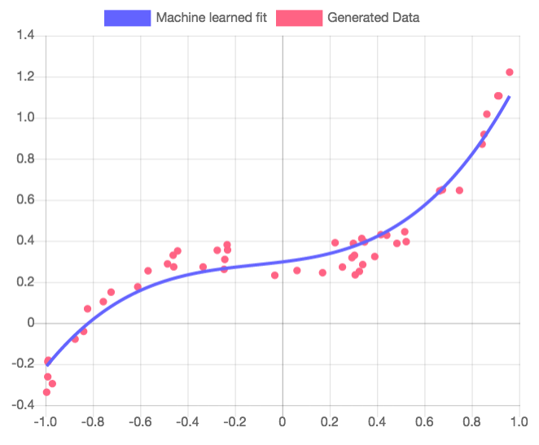

Polynomial Fitter
This is a simple application of TensorFlow.js to curve fitting. Using the ideas of an predictor, optimizer, and loss function, we fit a curve onto a set of generated data. This was adopted from Google's example of fitting a curve to synthetic data.
